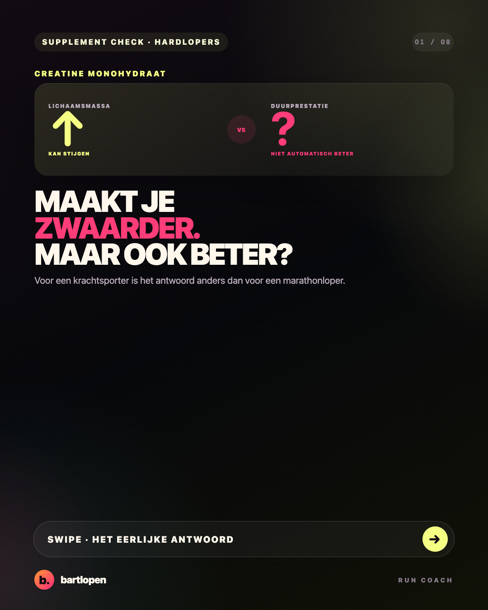
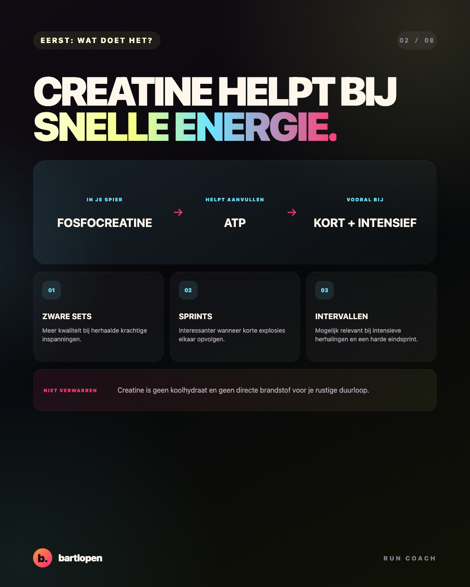
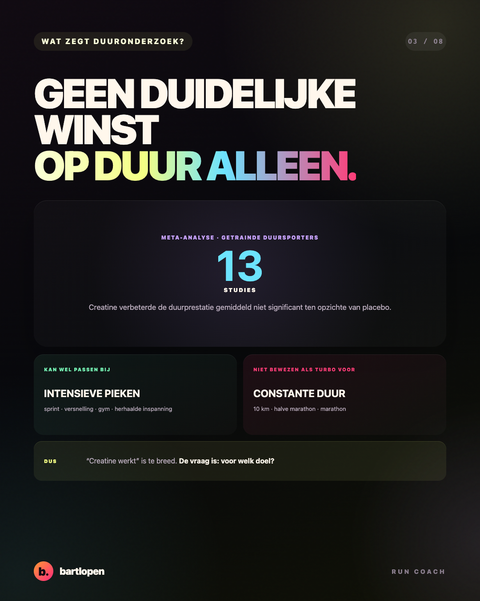
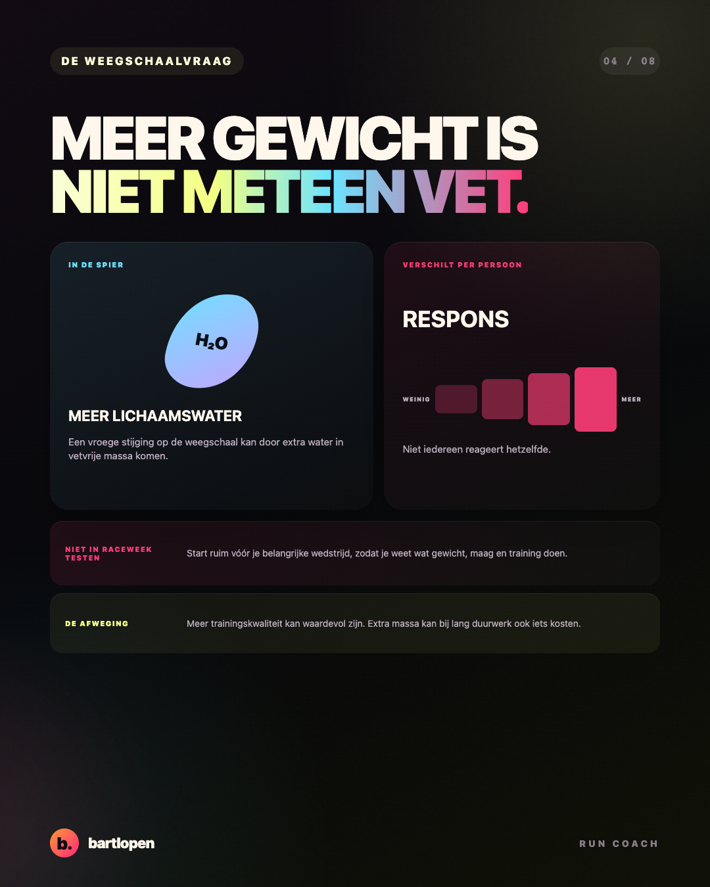
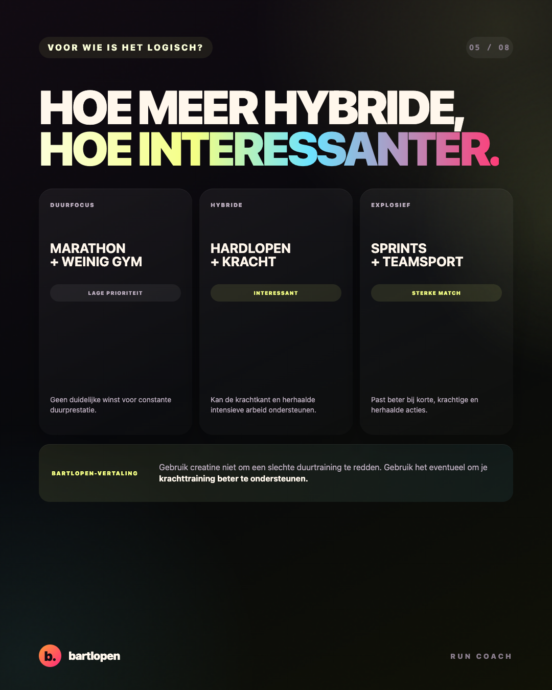
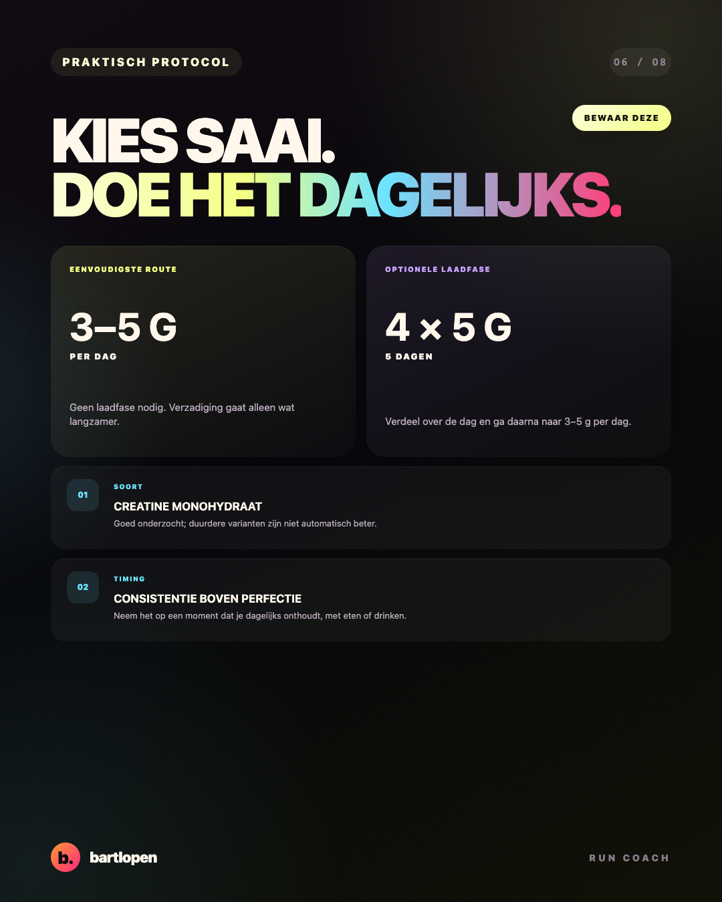
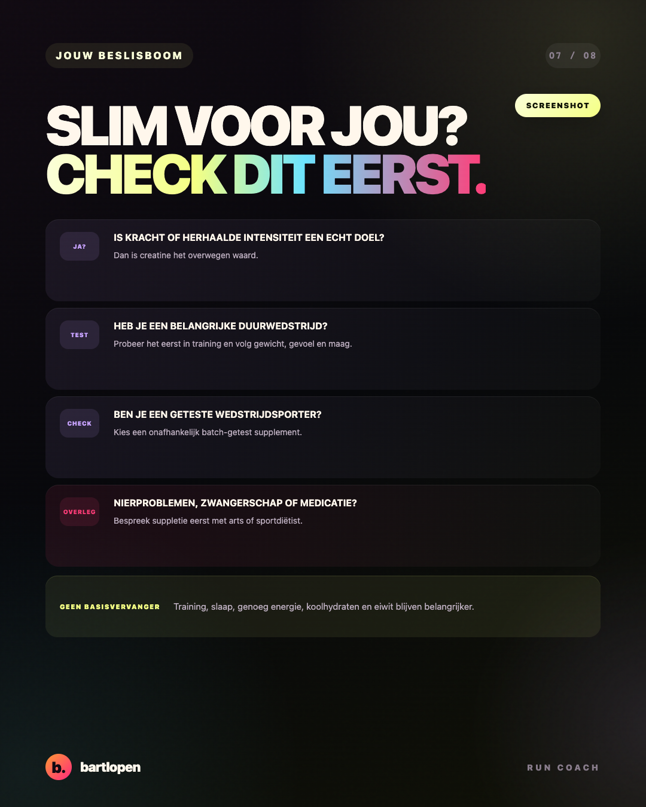
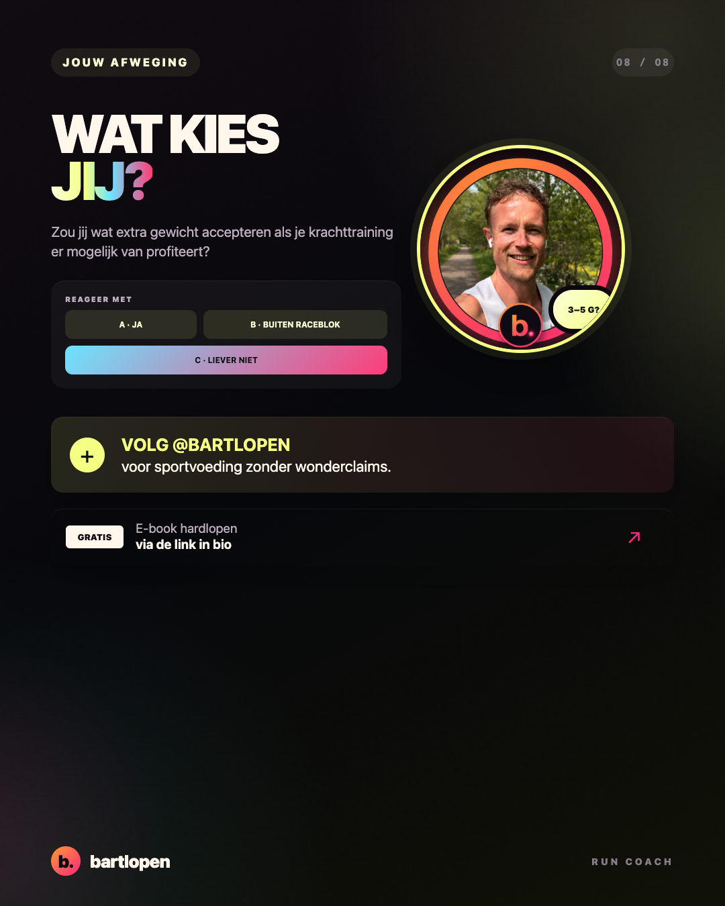

SLIDE 01 ↗Creatine voor
hardlopers
Acht eerlijke slides over kracht, duurprestatie, lichaamswater en de praktische keuze voor creatine monohydraat. Zonder wonderclaims, wel met een helder protocol.

SLIDE 02 ↗
SLIDE 03 ↗
SLIDE 04 ↗
SLIDE 05 ↗
SLIDE 06 ↗
SLIDE 07 ↗
SLIDE 08 ↗Caption
CREATINE MAAKT JE NIET AUTOMATISCH SNELLER. 👀 Voor krachtsport is creatine monohydraat een van de best onderzochte supplementen. Voor een afstandsloper is het antwoord minder simpel. Creatine past vooral bij: 🏋️ krachttraining ⚡ korte en herhaalde intensieve inspanningen 🏃 een hybride combinatie van hardlopen en gym 🔥 sprints en een harde versnelling Voor constante duurprestatie vonden onderzoekers gemiddeld geen duidelijke winst. En doordat je lichaamswater en gewicht kunnen stijgen, is de afweging voor een marathonloper anders dan voor een hybride sporter. Mijn simpele route: 🥄 kies creatine monohydraat 📅 neem dagelijks 3–5 gram ⏰ timing is minder belangrijk dan consistentie 🧪 test het ruim vóór je belangrijke wedstrijd ✅ kies als wedstrijdsporter een batch-getest product Een laadfase kan, maar hoeft niet. Training, slaap, koolhydraten en eiwit blijven belangrijker dan je supplementenpot. UITDAGING: kies niet omdat iedereen in de gym het gebruikt. Kies omdat het past bij jouw doel. Zou jij wat extra gewicht accepteren als je krachttraining er mogelijk van profiteert: A ja, B alleen buiten mijn raceblok of C liever niet? 👇 #creatine #hardlopen #krachttraining #hybridtraining #sportvoeding #runningtips #bartlopen
Bronnen: de Australian Institute of Sport-classificatie, het AIS-praktijkprotocol, een meta-analyse naar duurprestatie, de ISSN position stand en een onderzoek bij getrainde duursporters.